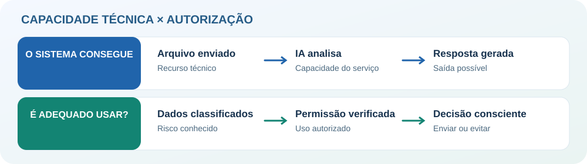

Use a IA com segurança
Proteja informações e tome decisões responsáveis.
Leia o conceito principal com uma linguagem simples.
Copie o exemplo e experimente no Gemini.
Confira a resposta e tente no seu contexto.
O que você vai aprender
Você vai aprender a usar a IA sem expor informações que devem ser protegidas.
Informações que identificam ou podem identificar alguém.
Conferir fatos, números e permissões antes de agir.
Entenda o exemplo, um passo por vez
Use as setas para avançar. Se estiver em sala, escolha “Apresentar” para exibir apenas a etapa atual.
👁️ Semáforo antes de compartilhar dados
⚠️ Nem todo dado deve ser enviado para uma IA
Antes de copiar informações para o Gemini, verifique se há nomes de clientes, documentos, senhas, contratos ou dados internos. Use apenas o necessário, siga as regras da empresa e confira as respostas antes de publicar ou tomar decisões.
LGPD na prática: anonimize antes de colar
No Brasil, a LGPD (Lei 13.709/2018) orienta o uso de dados pessoais. Regra simples: se a tarefa funciona sem identificar a pessoa, tire o que identifica.
Prompt para treinar
Antes de compartilhar, pense na porta correta
Mesmo uma ferramenta útil não deve receber qualquer informação. A pergunta correta não é apenas “o Gemini consegue analisar?”, mas “posso usar estes dados para esta finalidade?”.

- Arquivo enviado — Recurso técnico
- IA analisa — Capacidade do serviço
- Resposta gerada — Saída possível
- Dados classificados — Risco conhecido
- Permissão verificada — Uso autorizado
- Decisão consciente — Enviar ou evitar
💡 Analogia — Documentos em portas com diferentes chaves
Imagine quatro armários: folhetos públicos, documentos internos, contratos confidenciais e registros pessoais delicados. Nem todas as pessoas têm a mesma chave. O fato de um documento poder ser fotografado ou copiado não significa que possa ser enviado a um serviço externo.
☕ E na Café Horizonte?
Para praticar análise de satisfação, use comentários fictícios e anônimos. Substitua nome, telefone e endereço por dados inventados antes de testar os prompts. Informações reais exigem base adequada, autorização e observância das políticas aplicáveis.
Guarde esta ideia: Use os 3 P: propósito claro, permissão adequada e dados proporcionais à tarefa. Quando houver dúvida, não compartilhe.
🤔 Pare e pense — É seguro colar uma lista de clientes reais em um chat apenas porque a tarefa é útil?
Não. A utilidade não substitui finalidade legítima, permissões, política interna e proteção adequada dos dados. Para a aula, use dados fictícios.
Torne uma solicitação segura antes de usar o Gemini
A tarefa pode ser legítima, mas o modo de fornecer os dados pode ser inadequado. Vamos praticar minimização e substituição de informações.
A primeira pergunta não é “o Gemini consegue analisar?”. É “podemos compartilhar estes dados?”. Muitas vezes a tarefa funciona com um exemplo fictício ou com informações resumidas, sem identificar pessoas.
O que observar: Trocar o nome de um cliente por iniciais pode ser insuficiente se outros detalhes ainda permitirem identificá-lo. Use somente dados necessários e autorizados.
- “Analise esta planilha de clientes contendo nomes completos, telefones e documentos.”
- Objetivo real: descobrir quais perguntas são mais frequentes.
- Os identificadores individuais não são necessários para responder à pergunta.
Faça junto, passo a passo
- Identifique os dados que não ajudam a responder à pergunta.
- Substitua nomes, contatos e documentos por identificadores anônimos ou use apenas categorias agregadas.
- Use o Gemini com dados inventados, proponha agrupamentos e confira a saída.
Experimente no Gemini
Copie este comando e teste em gemini.google.com. Os dados são inventados para a atividade.
🔎 Ver um resultado de referência e o que conferir
Tema/ocorrências: horário 4; cardápio 3; entrega 2. O teste mostra que é possível estudar padrões sem compartilhar identificadores de pessoas. As respostas-base ainda precisam ser validadas.
Este é um exemplo elaborado para estudo, não uma resposta recebida automaticamente do Gemini. Compare os fatos e a estrutura; a ferramenta pode gerar outra redação.
🧠 Tome uma decisão
Para contar assuntos frequentes, o que é mais adequado enviar?
Selecione uma alternativa para receber a explicação.
✅ Confira seu resultado
0 de 3 critérios conferidos.
Uma clínica deseja entender os temas mais frequentes das dúvidas recebidas. Em vez de enviar mensagens de pacientes, crie cinco dúvidas totalmente fictícias e peça ao Gemini uma classificação por tema.
Você pode adaptar a situação ao seu negócio. Use somente informações inventadas ou autorizadas.
Concluiu? Veja como conferir sua resposta
O exercício deve usar situações inventadas, sem nomes, sintomas associados a pessoas reais, prontuários, contatos ou informações identificáveis.
Treinar mais (opcional)
🧪 Cenário 1 — Relatório de clientes
Um relatório contém nome, CPF, telefone e informação financeira. Você quer apenas descobrir os cinco temas de reclamação mais frequentes.
🧪 Cenário 2 — Postagem pública
O Gemini gerou um texto afirmando que “90% dos consumidores preferem atendimento por IA”. O texto não trouxe fonte. Antes de publicar, você deve localizar evidência confiável ou remover a afirmação.
Checklist de uso responsável
📚 Conceitos em detalhe (consulte quando precisar) · 3 leituras
1. Minimização de dados
Se a tarefa pode ser realizada sem identificar uma pessoa, remova identificadores desnecessários. Não inclua mais informação do que o necessário para cumprir o objetivo.
Evite
Nome completo + CPF + telefone + histórico financeiro quando a tarefa é apenas revisar o tom de uma mensagem.
Prefira
Um exemplo anonimizado ou fictício que preserve apenas o contexto necessário.
2. Segurança da informação
Nunca coloque senhas, tokens, chaves de API ou outras credenciais em um prompt. Em empresas, siga políticas de segurança e as configurações aprovadas pela organização.
3. Ética e impacto
IA pode amplificar vieses, produzir conclusões injustificadas e afetar pessoas. Quanto maior o impacto de uma decisão — contratação, crédito, saúde, questões jurídicas ou financeiras — maior deve ser a supervisão humana e o cuidado com fontes, critérios e responsabilidade.
Auditoria de 5 minutos com semáforo
Aprenda a decidir antes de colar.
Passo a passo
- Receba 6 trechos fictícios (um folheto, uma planilha de estoque, um contrato, um e-mail com CPF, uma avaliação, uma ficha de funcionário).
- Classifique cada um em verde (pode), amarelo (anonimize) ou vermelho (não envie).
- Para os amarelos, use o prompt de anonimização e mostre o antes e o depois.
Prompt de partida
Resultado para mostrar
Uma tabela de 6 linhas com a cor, o motivo e, nos amarelos, o texto anonimizado.
Use sempre dados fictícios. Recursos e nomes de ferramentas variam conforme conta, país e data; confira o que está disponível para você.
Confira o que aprendeu
🔎 Aprofunde o tema (opcional) · 3 leituras
🗂️ Classifique antes de compartilhar
🟢 Público
Conteúdo já destinado à divulgação pública. Ainda assim, confira direitos e contexto.
🟡 Interno
Informações de trabalho que podem exigir ferramenta aprovada e regras da organização.
🟠 Confidencial
Dados estratégicos, contratos, informações de clientes ou documentos restritos. Exigem forte controle.
🔴 Sensível
Dados pessoais sensíveis, credenciais, segredos ou informações cuja exposição causaria dano relevante. Não envie sem base, autorização e ambiente adequado.
🛡️ Os três “P” do uso responsável
Propósito
Por que esse dado precisa ser usado?
Permissão
Tenho autorização e sigo as regras da organização?
Proporcionalidade
Estou fornecendo somente o mínimo necessário?
⏸️ Pare e pense
Remover apenas o nome torna um documento anônimo?
Nem sempre. Combinações de telefone, e-mail, cargo, endereço, números de contrato ou outros detalhes podem permitir reidentificação.
Se a IA gerou a mensagem, quem responde pelo envio?
A responsabilidade continua com a pessoa e a organização que decidiram utilizar e publicar o conteúdo.
Como isso ajuda no seu trabalho?
Pense em três tipos de informação usados na sua rotina. Classifique-os como público, interno, confidencial ou sensível e anote qual seria o cuidado mínimo antes de usar qualquer ferramenta de IA.
Minhas anotações (opcional)
📝 Meu caderno de aprendizagem
Registre aqui uma ideia, dúvida ou aplicação para o seu negócio.
Terminei esta aula
Fez a leitura e experimentou a atividade? Salve esta aula como concluída.